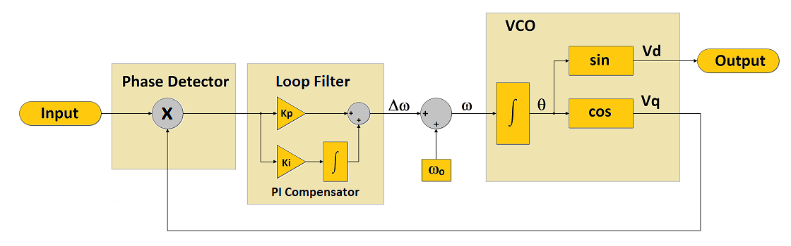
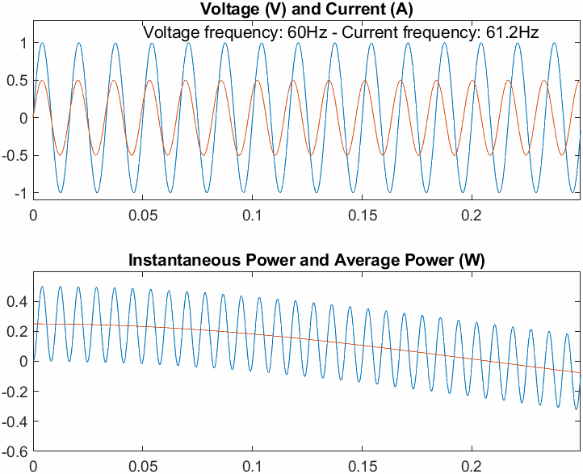
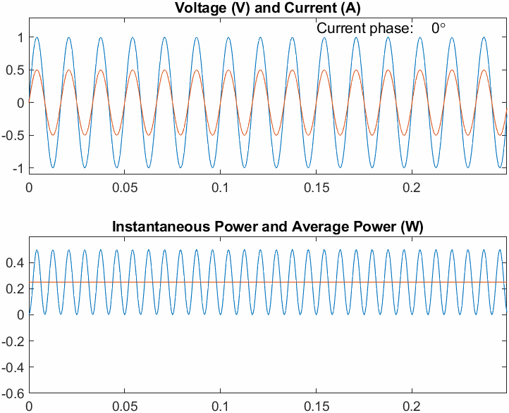
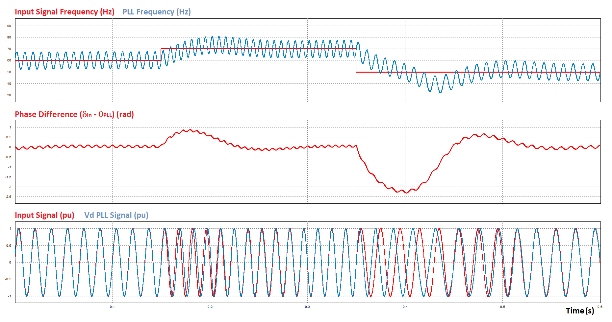
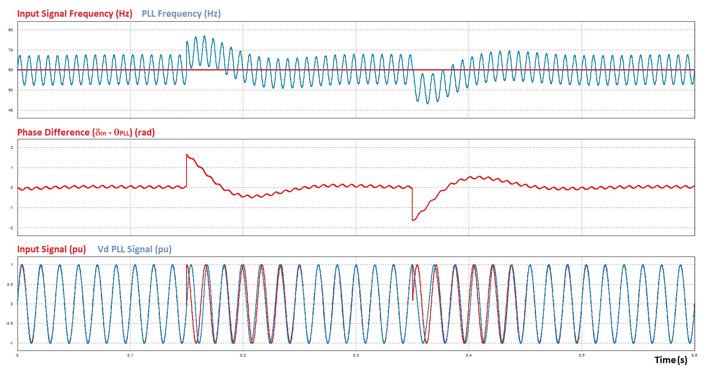
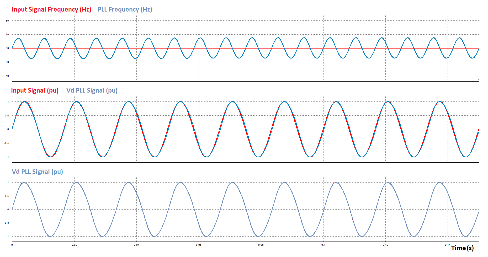
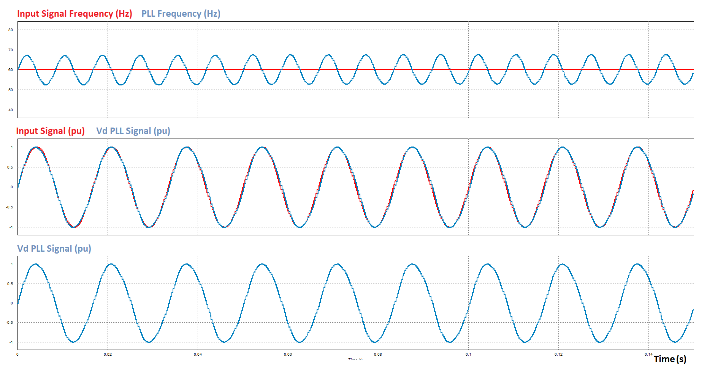
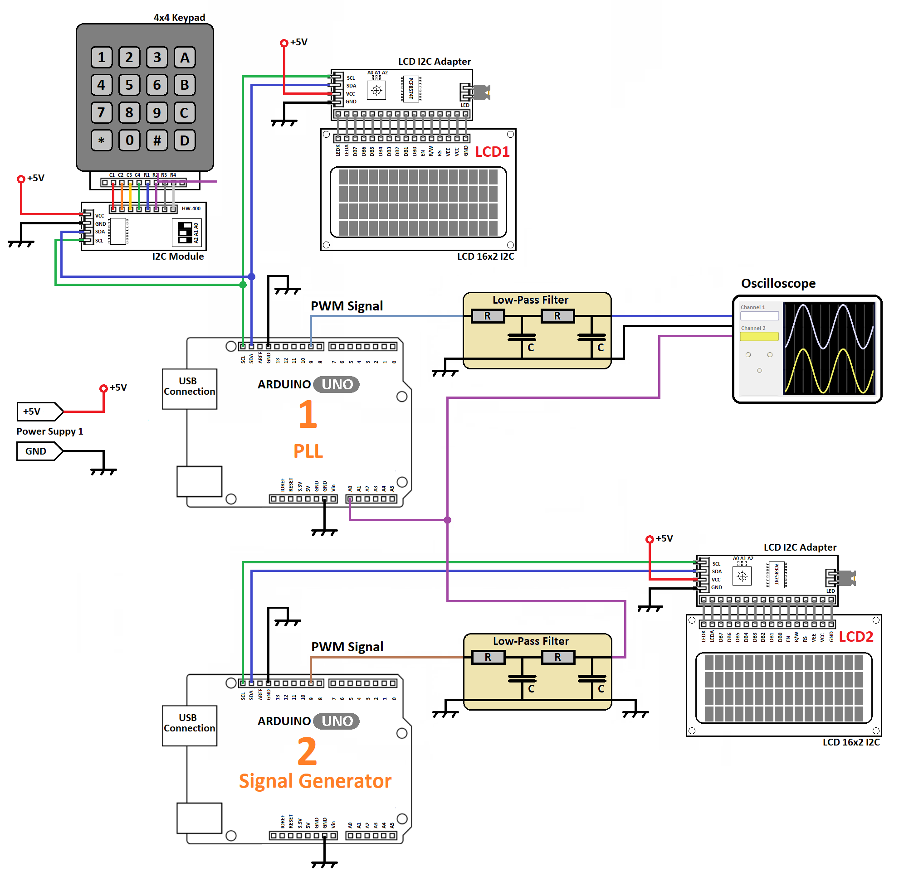
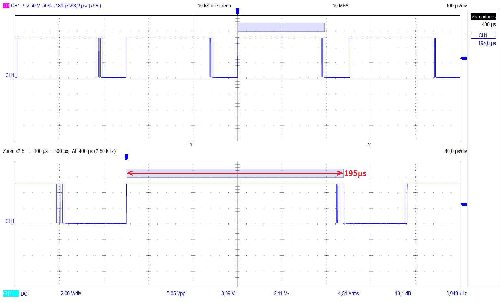
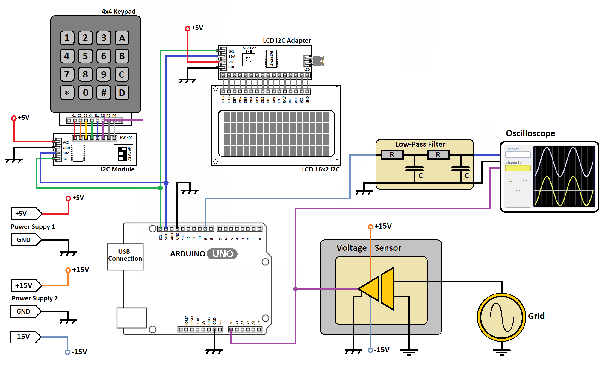

PLL (Phase Locked Loop) is a feedback control system that produces an output signal which phase presents a constant difference to the phase of the applied input signal.
PLLs are used in several applications like communication systems, clock signal generation in microprocessors and microcontrollers.
PLLs have recently gained interest due to its application in PV (Photovoltaic) grid-connected systems.
The purpose of this project is to present in a simple way how the digital PLL algorithm works and how we can measure the grid frequency using it. Thus, the simplest PLL algorithm is considered and executed in Arduino Uno (Atmega328p).
Considering the didactic purpose of the project, it was used a simple algorithm running in a simple microcontroller, but it is important to keep in mind that the simplest PLL algorithm is not suitable for many applications since, as instance, it presents frequency oscillations around the equilibrium point.
We can find more sophisticated PLL algorithms in literature, but certainly they will require a more powerful microcontroller.
The Plant - Phase Locked Loop
The simplest PLL scheme is shown in Fig.1. It is composed of three subsystems: the phase detector (multiplier), the filter loop (PI compensator) and the VCO (Voltage-controlled oscillator).
The PI Compensator acts like a low-pass filter that extract the average value of product between the Vq signal, generated by the VCO, and the input signal. The frequency of the Vq signal is determined by the PI controller. As the PI controller integrates the average value of product of the signals, in order to achieve the equilibrium, the loop has the find the Vq frequency for which the average value is zero. This happens when the signals are orthogonal, that is, they have the same frequency and are 90 degrees out of phase.
An easy way to understand that is to consider, as instance, the input signal as a voltage and the VCO Vq signal as a current, thus, the phase detector output will be the instantaneous power, and the loop filter output will provide the average power. If the voltage and current (same frequency) are 90 degrees out of phase, the average power is zero. If the frequency is not the same, the average power is not constant, it will change according the difference between the frequencies of the signals. In this case, the equilibrium point hasn't achieved yet.
When the steady state is achieved, the Vq signal is 90 degrees out of phase with input signal and Vd is equal in phase and frequency with it.

Fig.1 - Basic PLL Scheme
PLL Input/Output Signals - Voltage and Current Analogy
Fig.2. shows what happens to the average power when the current and voltage signals have different frequencies (ω1 and ω2). As we can see, the average power is not constant, instead, it presents an oscillation at the frequency (ω1 - ω2).
Note that, due to the distinct frequencies, as time goes by, the phase difference between signals changes, affecting the average value of the instantaneous power. Then, in order to achieve a constant average power, the controller has to force the VCO to move to the same frequency of the input signal.
Fig.3 shows what happens to the average power when the current and voltage signals have same frequency (ω1 = ω2). In this case, the graph presents the instantaneous and average power when only the phase of current is changing. As we can see, if the average power is constant, the phase of the Vq signal keeps a constant relationship with the phase of the input signal. As the controller presents an integral action, when steady state is reached, the average value at the controller input must be zero. It means that the signal Vq has the same frequency of the input signal and Vq is 90 degrees out of phase with it. Then, Vd and the input signal have same frequency and phase, they are locked.
The reader has to keep in mind that the voltage, the current and the instantaneous power presented in Figs. 2 and 3 imply only an analogy to make the PLL comprehension easy. They have no relationdship to a specific RLC circuit.

Fig.2 - Inner product of signals with distinct frequencies

Fig.3 - Inner product of signals, same frequency, distinct phases
PLL Control Design
PLL is a non-linear control system and its design is not trivial. Generally, a small signal model is used to determine the control parameters, which corresponds to a linearization around an operating point.
In the current project, we consider the design presented in [1].
The PI Compensator parameters are:
Kp = 92 (V2s/rad)
Ti = 0.0217 (s)
As can be seen in [1], the design consider a settling time of 100 ms. This implies a dynamic behaviour in the PLL loop that results in some level of oscillation in frequency in the steady state. It is possible to change the loop filter function to reduce the level of oscillation, but certainly this will imply a slow dynamic behaviour in the PLL loop. If your application needs a better solution, see other options in [1],[2], but probably a more powerful microcontroller will be required.
It is important to emphasize that the parameters above imply that the input signal and Vq signal are in pu (per unit value). The gain and offset of the ADC system need to be adjusted for that. See more details in RMS Voltage Measurement Using Arduino UNO.
In order to achieve real time execution in Arduino, a sampling rate of 4kHz is used. Thus, converting the PI parameters to the discrete version at this sampling rate and using the zero-order-hold method, we have:
$$ G_{PI}(z)=\frac{92z-90.94}{z-1} \ (1)$$
PLL Performance
Fig. 4 presents a simulation result of the designed PLL for a positive frequency jump of 10Hz applied to the input signal at 0.15s, and a negative frequency step of -20Hz applied to the input signal at 0.35s. As we can see, the PLL frequency follows the input frequency, keeping the signal Vd and the input signal equal in phase and frequency (average value).
The same plant is simulated again, but now a positive phase jump of π/2 is applied to the input signal at 0.15s, and a negative phase jump of -π/2 applied to the input signal at 0.35s. The result is presented in Fig. 5. Again, we can see that the PLL loop is able to synchronize the signals after the input transient.

Fig.4 - PLL Phase and Frequency Response - Input Signal Frequency jumps at 0.15s and 0.35s

Fig.5 - PLL Phase and Frequency Response - Input Signal Phase jumps at 0.15s and 0.35s
Figs 6 and 7 show the PLL operation in the steady state condition, in continuous time and discrete time (sampling rate of 4kHz), respectively.
Looking to these Figures, the reader can notice that the Vd signal is not a perfect sinusoidal signal. This happens because the its frequency is not a constant, like it is for the input signal. It is like a car on a race track. The speed changes according the position of the car in the race track, but the average speed (average frequency) will be constant if the lap time (period) is constant. The simplest PLL algorithm is affected by the average speed (average frequency). If the loop filter has a high bandwidth, this will imply fast changes in the average value and a fast dynamic behaviour of the PLL, however, this will result in a high level of frequency oscillations and more distortions in the VCO signals. It is not the objective of this project to discuss this point in details. See more details in [1],[2].

Fig.6 - PLL Phase and Frequency Response (steady state - continuous time)

Fig.7 - PLL Phase and Frequency Response (steady state - discrete time -sampling rate of 4 kHz)
PLL Test
In order to verify the operation of the digital PLL in Arduino, a second Arduino board was used. This second unit run a code of a signal generator and it is connected to the first unit as presented in Fig.8
The signal generator code applies a sequence of several transients at the PLL input:
It starts with a sinusoidal signal at 60Hz;
At t=20s, it increases the frequency to 70Hz;
At t=40s, it decreases the frequency to 50Hz;
From t=50s to t=70s, it applies a frequency ramp from 50 to 60Hz (+0.5 Hz/s);
At t=90s, it it applies a phase jump of π/2 in the input signal.
The complete PLL code that runs in Arduino 1 (Fig.8) is presented below. The PLL is executed by the ADC interrupt service routine (ISR), and the ADC is triggered by timer 1 at each 250µs (4kHz).
The sine and cosine calculations of the AVR Math Library take more than 100 µs to be executed, so, to avoid the spending of this time, a lookup table (LUT) strategy is used. The duration of calculating the trigonometric functions is presented in Table I.

Fig.8 - Scheme for the PLL Test
Table I - Duration of calculating trigonometric functions
Function
Duration in cycles*
Duration in µs
Sin(π/2)(AVR Math Lib)
1717
107.3
Cos(π/2)(AVR Math Lib)
1798
112.4
Sin(π/2) [LUT](index calculation and table access)
748
46.8
Cos(π/2) [LUT] (only index offset and table access)**
43
2.7
*The duration in number of cycles was measured using the timer 1 of the Atmega328p running with a clock of 16 MHz. See the way you can measure a time that a given code snippet takes to be executed in RMS Voltage Measurement Using Arduino
**The cosine is calculated using the sine table (200 samples for entire period), considering the normalized angle shifted in 1/4 of the period (50 points). This is calculated using the normalized angle converted to integer in the previous sine calculation, which is faster than to convert the angle from float to integer. Thus, in this case, the cosine value is obtained faster.
The atmega328p microcontroller (Arduino Uno) has no D/A converter. It is possible to use an external one (MCP4725) connected by the I2C bus, but as we can see in Fast Function to Write Samples in the MCP4725, the write access to this device takes at least 76µs and probably this would compromise the real time operation in the desired sampling rate. In this case, a faster solution was considered, a PWM output and a passive low-pass filter, acting as a D/A converter. The sample update takes only the time needed to write it in compare register.
In order to verify if it is possible to run the complete code in real time at 4kHz, set/reset gpio commands were inserted in the ADC interrupt code, and the correspondent signal is show in Fig. 9. As we can see the ADC interrupt code takes around 195 µs to be executed, 78% of the sampling period (250µs).

Fig.9 - ADC interrupt pulse for real time execution verification
The passive low-pass filters (LPF) shown in Fig.8 are identical and present the following characteristics:
Two cascaded RC sections
R = 3.3kΩ
C = 100nF
Neglecting the effect of loading from one section on the other (small in this case), we can say that the filter has a cut-off frequency of 482.3 Hz and presents an attenuation around of -37dB (x0.0141) at 4kHz, which is enough to remove the carrier from the PWM signal.
It is important to emphasize that the use of the passive LPF to separate the modulating signal from the PWM carrier results in a phase delay. The reader must take this into account when comparing signals in the oscilloscope.
A link for a video with the PLL test in the actual plant is presented below.
Grid Frequency Meter
As can be seen in Figs. 6 and 7, the PLL frequency, even in the steady state, presents a significant ripple at at the double of the frequency of the input signal. In order to show the average frequency in a LCD, a digital first order low-pass filter is used. This filter doesn't affect the PLL dynamics, since it is not a part of the PLL feedback loop. Besides that, it is simple and implies a small computational burden.
The digital first order low-pass filter (LPF) presents the following characteristics:
Sampling rate = 4 kHz;
Cut-off frequency = 0.12 Hz
Transfer function:
$$ G_{LPF}(z)=\frac{0.00157}{z-0.99843} \ (2)$$
The reader has to keep in mind that it is a simple frequency meter for low frequencies. The principle can be used to design a more sophisticated frequency meter, but it is recommended to use an enhanced PLL algorithm and a more powerful microcontroller.
In order to measure the grid frequency, it is necessary to connect a voltage sensor and the respective signal conditioner circuit in one of the analog inputs of the Arduino Uno. The scheme of the frequency meter is show in Fig. 10.
Note that to see the Vd signal (PB1-OC1A PWM output) in oscilloscope, which will be synchronized to the grid voltage, you need to connect the analog low-pass filter. You have to consider that the use of filter will result in some delay for Vd signal.
Depending on the voltage amplitude you are measuring, is is necessary to calibrate the sensor to provide the voltage in pu. You have to remember that the PLL loop filter coefficients were designed considering the inputs of the phase detector in pu.
The operation of the Frequency Meter in an actual plant can be seen in the video, which the link is presented below.

Fig.10 - Scheme for the PLL and Grid Frequency Meter
[1] Remus Teodorescu, Marco Liserre and Pedro Rodríguez, Grid Converters for Photovoltaic and Wind Power Systems, John Wiley & Sons, Ltd., 2011, ISBN: 978-0-470-05751-3.
[2] Masoud Karimi-Ghartema, Enhanced Phase-Locked Loop Structures for Power and Energy Applications, John Wiley & Sons, 2014, ISBN: 978-1118795026.